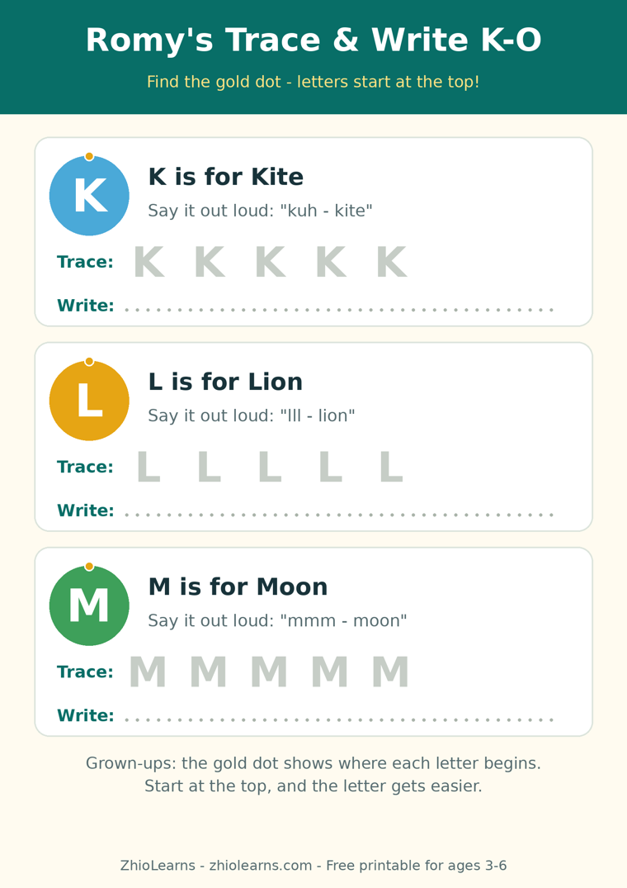

Start at the Top: The Tiny Habit That Makes Letters Easier to Write
Try a small experiment tonight. Ask your child to write the letter L, and watch only one thing: where the pencil starts. If it starts at the bottom — and for many little writers it does — you are about to watch a small hand climb up a hill it never needed to climb, then turn around and walk back down. The letter comes out wobbly, or backwards, and your child concludes something unfair: I am bad at letters.
They are not bad at letters. They took a hard route. Almost every capital letter begins at the top, and starting there makes the whole shape easier — for the hand, and for the child watching it appear.
Why the starting point does the heavy lifting
Writing a letter is a route, not a picture. When a child copies a letter as a picture, every try is a fresh guess: where do I begin, which way do I turn? When they learn the route — start at the top, go down, across — the letter becomes a path they can walk again tomorrow without thinking. That is the difference between copying and writing, and it is why teachers spend so much time on something that looks, to us, like a tiny detail.
It also explains the famous backwards letters. A b that starts at the bottom is a coin toss between b and d. A letter that starts at the top has a direction built in — and far fewer coin tosses.
The five-minute routine
- The dot. Put one small dot where the letter begins and say: “Letters start at the top — find the dot.” One dot quietly replaces a page of corrections.
- The air-trace. Trace the letter in the air together, big and slow, saying its name out loud. Big arm movements are easier than pencil movements, and the shape sinks in before the pencil is even picked up.
- Trace, then one brave try. Trace it on paper a few times, then write it once alone. One letter, finished proudly, teaches more than five letters rushed — and stopping while it is still fun is what brings them back tomorrow.
One thing to let go of: neatness. At 4 and 5, a wobbly letter that started in the right place is real progress — the hand is building strength and the route is being learned. Neatness arrives later, quietly, on top of a route that already works.
A writing book built around the route
Romy’s Alphabet Adventure: Trace, Write & Say from A to Z follows exactly this order on every page: big, traceable letters to follow first, room to try independently, and each letter said out loud as little hands trace — so the shape and the sound arrive together, with Romy cheering from the corner.
Start tonight with the free printable below. K, L, M, N and O all begin at the top, which makes them the perfect practice set — and each letter badge carries a small gold dot showing exactly where to begin.
🖨️ Free printable: Romy’s Trace & Write K–O

Trace K, L, M, N and O from the gold start dot, say each sound out loud, then write all five letters on your own. Two pages, ages 3–6, free, no sign-up needed to print it. (Earlier set: Romy’s Trace & Write F–J is in the printables area too.)
Download the free printable (PDF)📚 Today’s book
Find Romy’s Alphabet Adventure: Trace, Write & Say from A to Z and Romy’s other books in our little shop.
See Romy’s books →🌿 More from the Parent Corner
The bedtime battle is rarely about the story. Our previous article is about choosing tonight’s story in the morning.
Just One More Story? →